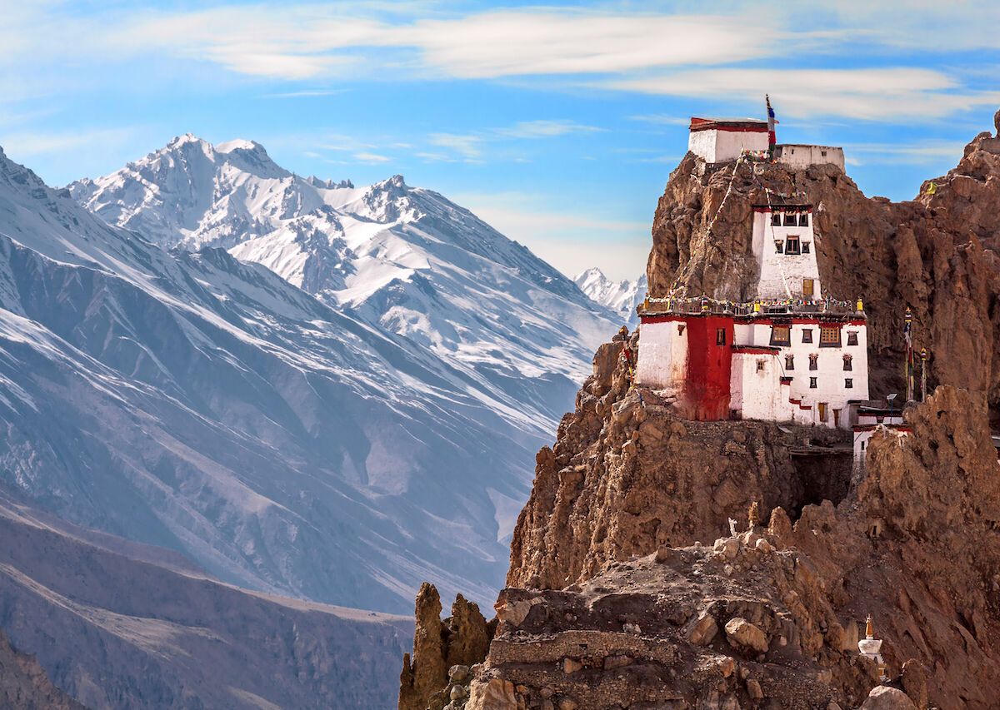
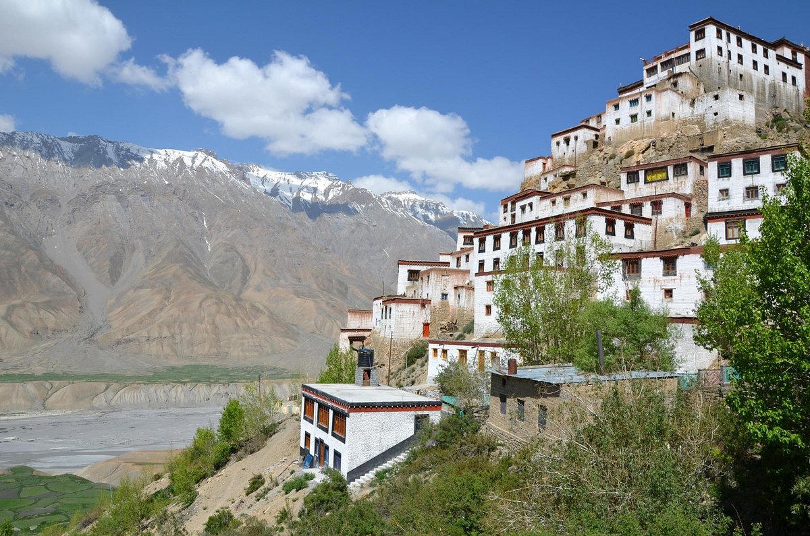
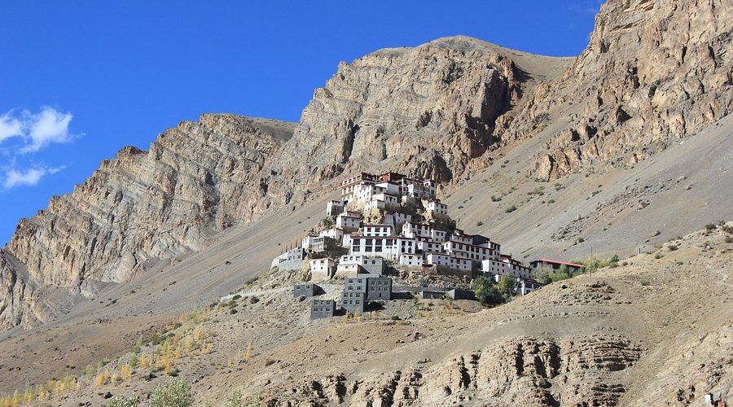
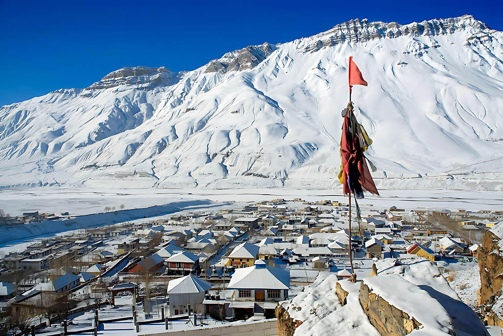

A high, dry valley of white gompas, wind and a sky that feels closer than the road
Spiti is a rain-shadow valley east of the high passes: brown slopes, a pale river, and monasteries stacked on cliffs. Kaza is the practical hub. From there, Key sits above the river like a white fortress, Tabo holds some of the oldest painted halls in the region, and Dhankar looks out over the Pin–Spiti meeting. Summer and winter are not the same journey — the Manali–Kunzum corridor usually opens only in the warmer months; winter access follows a slower, colder line.
Give the valley enough nights to acclimatise. A rushed two-day dash from Manali rarely feels like Spiti. Seven or eight summer days, or a carefully paced winter week, is the more honest starting point.

Passes begin to open. Days are bright, nights still close to freezing in Kaza.
The brown desert at its most reachable — monasteries, village loops and long driving days.
Thin air and sharp light. Beautiful, but early snow can shut Kunzum without much warning.
A white valley and quiet gompas. Only for travellers who accept cold, ice and flexible days.



Tell us summer or winter, how many days you have, and whether you want the Manali or Kinnaur approach. We’ll match the route to the season.